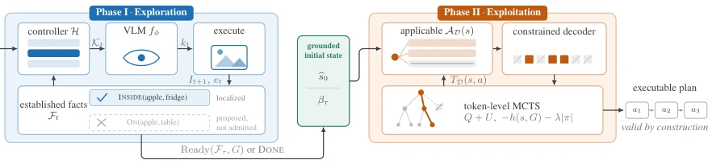
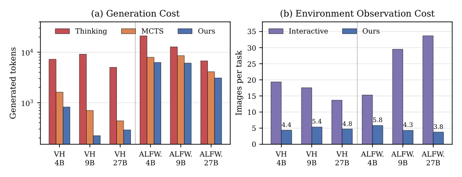
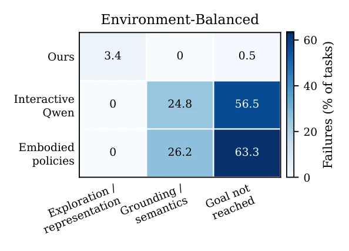
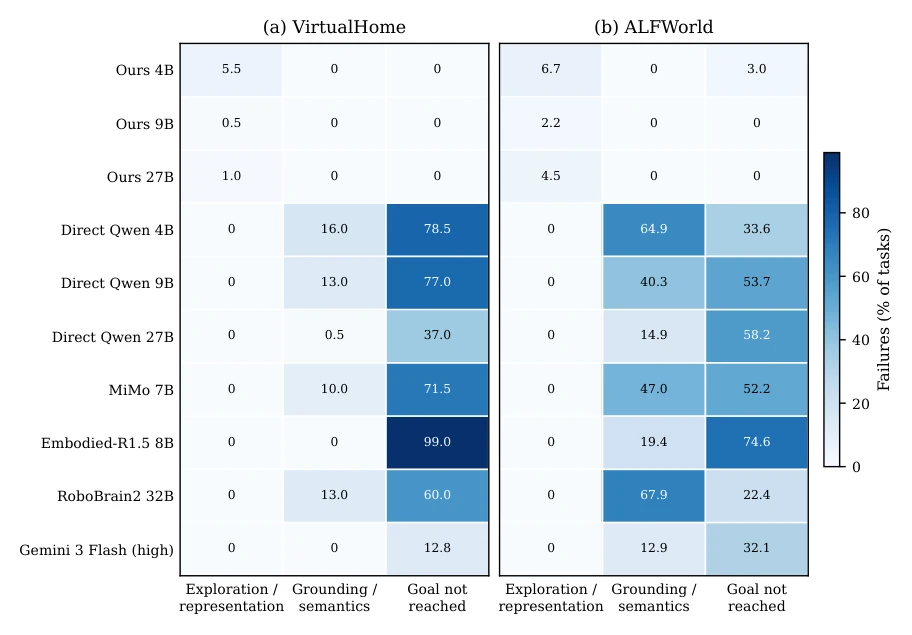
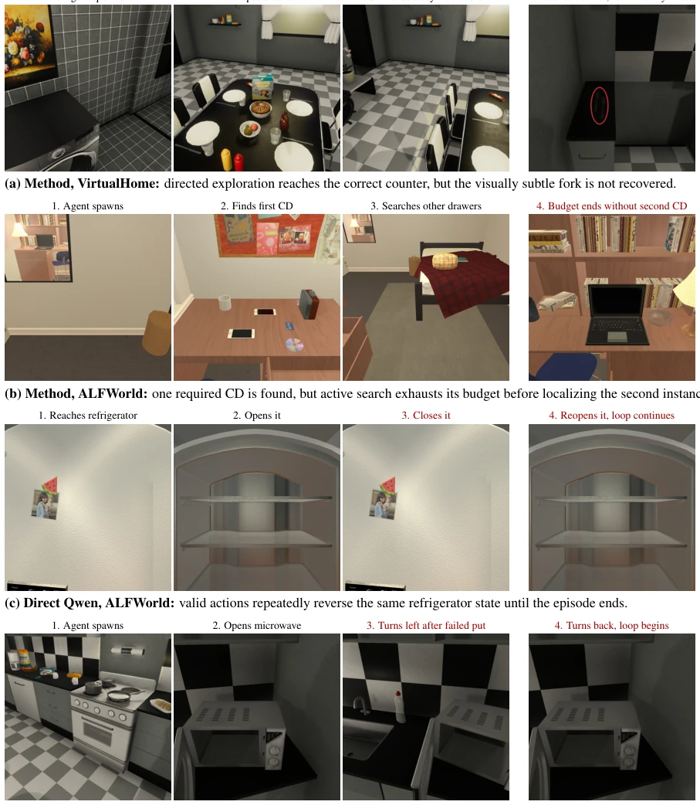
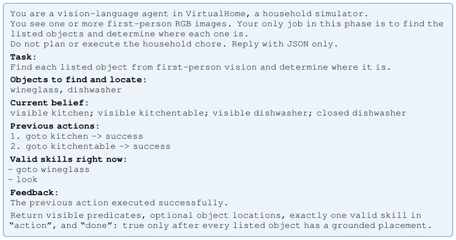
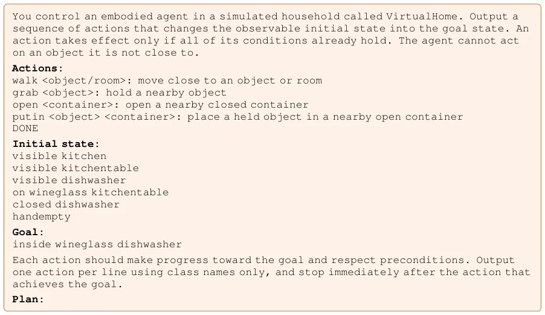
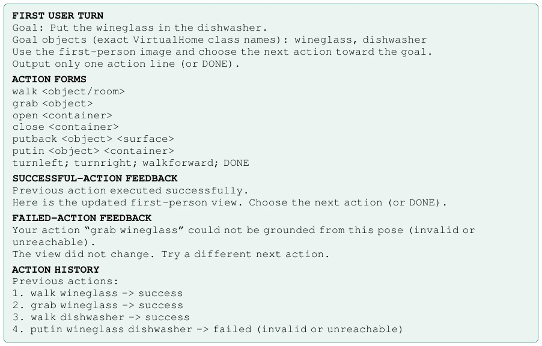

Mohammad Albinhassan, Yuming Feng, Alessandra Russo, Pranava Madhyastha abspdf
论文点评Review
这篇论文给 VLM 具身智能泼了盆冷水：光会说话不够，得能落地。作者搞了个神经符号代理，把“看”和“想”拆开。Phase I 负责瞎找线索建状态，Phase II 用 PDDL 锁死合法动作，再上 MCTS 搜最优解。结果挺打脸，4B 模型干翻 27B 直接视觉策略，成功率飙到 90%+。不过，这招本质是“用符号约束换模型规模”，代价是 Phase I 的视觉 grounding 要是挂了，后面全白搭。而且这方法在仿真里跑得好，真机能不能扛住噪声还得打个问号。总的来说，是给长程规划加了个“防幻觉保险”，但没解决感知本身的幻觉问题，属于“治标不治本”的聪明做法。
This paper casts a reality check on VLM embodied intelligence: merely speaking is insufficient; it must be actionable. The authors devised a neuro-symbolic agent that decouples 'seeing' and 'thinking'. Phase I is responsible for blindly searching for clues to build states, Phase II constrains legal actions using PDDL, then applies MCTS to search for the optimal solution. The results are quite counter-intuitive: the 4B model outperforms the 27B direct visual policy, with success rates soaring to 90%+. However, this approach is essentially 'trading model scale for symbolic constraints'; the cost is that if Phase I's visual grounding fails, the rest is in vain. Moreover, while this method runs well in simulation, whether it can withstand noise on real hardware remains questionable. Overall, it adds a 'hallucination insurance' for long-horizon planning, but does not solve the hallucination problem inherent in perception, representing a smart approach that treats symptoms rather than the root cause.
研究动机Motivation
具身智能的核心痛点在于 VLM 生成的计划看似合理却不可执行。现有工作如直接视觉策略容易在长程任务中累积错误，单次动作错误即可导致轨迹失效（Valmeekam et al., 2023）。虽然有人尝试用 PDDL 辅助规划（Liu et al., 2023），但往往将 PDDL 视为生成表示而非推理约束，导致语义错误。此外，现有系统难以将视觉状态绑定到形式化动作语义上，感知与规划耦合导致错误扩散（He et al., 2025）。本文旨在解决这一耦合问题，通过分离状态获取与符号规划，确保动作在生成阶段即满足预条件，而非事后验证。
The core pain point of embodied intelligence lies in VLM-generated plans that appear reasonable but are not executable. Existing work, such as direct visual policies, easily accumulates errors in long-horizon tasks, where a single action error can cause trajectory failure (Valmeekam et al., 2023). Although some have attempted to use PDDL to assist planning (Liu et al., 2023), PDDL is often treated as a generation representation rather than a reasoning constraint, leading to semantic errors. Furthermore, existing systems struggle to bind visual states to formal action semantics, where perception and planning coupling leads to error propagation (He et al., 2025). This paper aims to solve this coupling problem by decoupling state acquisition and symbolic planning, ensuring actions satisfy preconditions at the generation stage rather than post-hoc verification.
The overall approach adopts a two-stage architecture. Phase I (Exploration): VLM coupled with an exploration controller actively acquires task-relevant predicates and instance bindings from a first-person perspective, constructing a symbolic initial state bs0. Phase II (Exploitation): Conducts constrained symbolic planning based on a PDDL transfer model. The innovation lies in state-dependent constrained decoding, masking actions that do not satisfy PDDL preconditions at the token level, ensuring the generated plan is executable. Combined with Monte Carlo Tree Search, utilizing domain-independent heuristics to evaluate long-horizon consequences. Specifically, in Phase I, the exploration controller generates candidate skills based on current facts and goals, the VLM selects an observation target, the environment executes and updates the state. In Phase II, the decoding process dynamically calculates the set of legal actions under the current state, allowing only corresponding tokens to pass. MCTS nodes include state and token prefix, with selection strategies fusing search values and language model priors. After planning is completed, if the state is accurate, the plan can be executed directly in the environment. This method avoids error accumulation caused by the entanglement of perception and planning in traditional end-to-end policies, excluding non-executable actions from the search space through formal constraints, significantly improving robustness in long-horizon tasks.

Figure 1: Two phases joined by a narrow symbolic interface. A literal enters Ft only under visual or interaction evidence, so priors decide where to look, not what is present (greyed chip: unsupported). Only bs0 and βτ cross into Phase II, which excludes at three scales: inapplicable actions (struck pill), illegal tokens (slashed cells), unexpanded branches (struck node).
Tested on VirtualHome and ALFWorld, using the Qwen3.5 series (4B-27B). Compared to direct visual policies, the 4B model improves by 32% on VH and 63% on ALFWorld. Even outperforming the 27B direct policy. In terms of cost, generated tokens are reduced by 4 times, visible images reduced by 5.6 times. Ablation studies show constraints and search are complementary; used alone, effects are poor, combined ALFWorld success rate exceeds 95%. Failure analysis indicates residual errors are mainly concentrated in Phase I visual state acquisition, not planning generation, proving the planning part is highly reliable. Specifically compared direct VLM policies, Embodied VLM, and API policies. Results show neuro-symbolic methods have a clear advantage in parameter efficiency; small models with symbolic constraints outperform large-scale direct policies. In complex tasks like ALFWorld, the synergy of constraints and search is particularly critical; using either component alone cannot achieve high success rates. Additionally, through failure attribution analysis, it was confirmed that visual grounding is the main bottleneck, not planning logic, which points the direction for subsequent improvements.

Figure 2: Inference and environment-observation cost across model scales. (a) Mean generated tokens per task for unconstrained thinking, unconstrained MCTS, and our constrained MCTS. (b) Mean model-visible images per task for direct interactive policies and our two-phase agent. Lower is better in both panels.

Figure 3: Terminal failure attribution, macro-averaged equally across VirtualHome and ALFWorld. Values are percentages of all tasks.
其他图片Other Figures

Figure 4: Terminal failure attribution without aggregation across environments, Qwen scales, or visual-policy models. Values are percentages of all tasks for the corresponding row. Successful tasks contribute to none of the failure categories.

Figure 5: Example failure sequences. Each row follows an episode from its initial or first informative state through progress to the decisive error and its terminal consequence. The red callout in (a) identifies the relevant object.

Figure 6: Example VirtualHome Phase-I exploration prompt.

Figure 7: Example VirtualHome Phase-II planning prompt.

Figure 8: VirtualHome direct-interaction prompt components and environment feedback. The current first-person image accompanies each request.